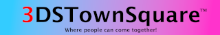

Welcome to 3DSTownSquare
What is this?
3DSTownSquare is about to launch soon!
Click me for more information
The launch date is May 24th 2022 (May 23rd in some areas) at the most, so keep looking out for the release.
Please note that this release date may or may not get delayed. We will just have to see. (Delayed once, originally May 20th, now May 24th)
For now, you can play pong!
Most likely the domain will be http://3dstownsquare.com. This is to make sure people trust the domain instead of cheaping out on a TK domain.
On day of release, this page will redirect to 3dstownsquare.com and no longer be a notice